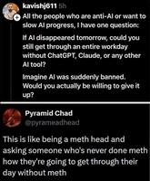

An anonymous reader quotes a report from Tom's Hardware: NorthPoint Development wants to build a data center on 1,300 acres in the Pocono foothills, near Hazle Township, Pennsylvania. As well as seeking to charm the local government with various funding packages, it has proposed paying checks of $10,000 per household. Despite the Pennsylvania town's median income of $60,000, the offer isn't being warmly welcomed by locals, reports the Wall Street Journal. Those interviewed were widely against the data center development plans and cited several reasons for being averse to accepting the payout. The major concerns regarded potential impacts on property values, the specter of noise pollution, and a distrust of both the AI moguls and local government representatives.
Offer letters began to be received by Hazle Township back in June. The WSJ recently talked to several residents about NorthPoint's $10,000 offer. While some say the $10,000 would be handy, it couldn't find many residents who were "eager to welcome the data center for the payout," in the journal's words. [...] Traditionally, developers have offered towns and cities packages worth tens of millions, including funding for local services. But direct cash payments to residents represent a new phase of their charm offensive, the WSJ indicates. Perhaps the idea for the direct payments to residents came after "a raucous public meeting last year, where angry locals asked what they had to gain by supporting the data center," ponders the source.
The locals won't just get the direct payout, though. Other funds up to $120 million over the next 15 years have been dangled like a carrot for community and local services investments -- improved schools, emergency services, and so on. Meanwhile, Hazle Township's government already rejected the data center project on zoning grounds last year, and it has enacted a temporary moratorium on data center construction. Finally, the $10,000 offer to households is simply not enough in many interviewed folks' opinions. Residents could feel insulted by it, regarding the offer as a bribe, concludes the WSJ report.
Read more of this story at Slashdot.
Meta has hired MongoDB CEO Chirantan "CJ" Desai to lead a new enterprise AI business aimed at turning Meta's models, agents and tools into products companies can deploy themselves. Reuters reports: Desai, a veteran technology executive, took over the role from Dev Ittycheria. MongoDB has appointed Ittycheria as interim CEO as it searches for a permanent replacement. "While the departure is disappointing, we believe MongoDB remains well-positioned strategically and view the share-price reaction as overdone," brokerage Piper Sandler said in a note.
[...] Desai will directly report to Meta CEO Mark Zuckerberg in the newly created role of chief enterprise platform officer and will focus on turning the company's AI stack into products and services that companies can deploy for their own businesses. Before joining MongoDB, Desai led product and engineering at Cloudflare and spent nearly eight years at ServiceNow, including as president and chief operating officer.
Read more of this story at Slashdot.
An anonymous reader quotes a report from the Associated Press: Walmart is aiming to assuage customers' fears about its new pricing technology as it rolls out digital price labels at its stores. In a statement posted on the company's website, Walmart's CEO John Furner vowed that the Bentonville, Arkansas-based retailer isn't using personal information like income, shopping history or a customer's willingness to pay to set prices, and it won't be doing so in the future either. "We don't set different prices based on who you are or the time of day, and we won't," Furner wrote Friday. "Whether you're buying groceries or electronics on a hot afternoon or in a sudden rush for an item, it's never a reason to charge you more."
The pledge from Walmart comes as concerns are mounting from some shoppers, consumer advocates and lawmakers skeptical about the rollout of digital price labels by the discounter and other stores. Digital price labels are rapidly replacing paper shelf tags at U.S. supermarkets and let stores change prices instantly from a central computer instead of having workers swap out paper labels by hand. [...] Walmart said in March that 2,300 Walmart U.S. locations already use digital shelves, and it expects this technology to be chain-wide within the next year.
Read more of this story at Slashdot.
Are AI chatbots quietly shaping the perceptions of U.S. voters? Voters trying to educate themselves about candidates "are unknowingly being served partisan talking points in the guise of neutral news summaries," write two news researchers in Politico magazine:
Leading AI chatbots cite partisan websites masquerading as independent local news outlets nearly half of the time when people ask about candidates and issues that the partisan sites have covered in the midterm campaign, according to a new audit by NewsGuard, an organization focused on news reliability where we work as analysts... NewsGuard prompted seven leading AI tools with queries based on recent coverage of candidates and issues by 12 pink slime sites — six left-leaning and six right-leaning. The results were stark. Collectively, the chatbots cited pink slime sites along with other sources in 48.2 percent of their responses.
In 7.7 percent of responses, pink slime sites were the only sources at all that were cited in chatbot responses, although other sources appeared in the source list provided at the end of the response.
None of the AI tools received results they'd probably be eager to boast about, though the percentage of chatbots' responses that cited a pink slime site had a relatively large range: 70.8 percent for OpenAI's ChatGPT, 54.2 percent for Microsoft's Copilot, 54.2 percent for Perplexity, 50 percent for Anthropic's Claude, 41.7 percent for Google's Gemini; 37.5 percent for Meta AI and 29.2 percent for xAI's Grok... The seven chatbots were also collectively three times more likely to cite left-leaning pink slime sites (cited in 36.3 percent of responses) than their right-leaning counterparts (cited in 11.9 percent of responses) — though that may have more to do with the progressive sites' far more frequent posting than any political bias from the chatbots.
"While citing the pink slime sites, only one chatbot response out of 168 total queries noted the partisan nature of the source," the article points out.
But they also note that the real problem seems to be that consumer-oriented AI chatbots just "use much of the internet's content — regardless of the reliability or standards of the source — to frame their answers."
Read more of this story at Slashdot.
A new Brookings Institution study notes the "strikingly physical" economic footprint of AI's buildout, from specialized chips and electricity to purpose-built data centers. (Two-thirds of a data center's costs are IT equipment, with one-third going to real estate and its associated power infrastructure.) "At an average of 3.63 percent of GDP per year, the projected buildout would be larger relative to the economy than the major U.S. canal, railroad, electrification, highway, and telecommunications investment booms."
This is pushing up prices for workers, electricity, and even commercial real estate (as well as consumer products that use chips), notes the Wall Street Journal, and reducing the construction on new houses and apartment buildings. And in addition, the paper points out, projections for this buildout "would double the electricity consumption of the entire U.S. residential sector."
The calculations come from Columbia Business School finance/real estate professor Stijn van Nieuwerburgh — and Reuters explains their significance:
Just as the rail and telecoms expansions led to notable bubbles and busts, Van Nieuwerburgh wrote that the extent of the buildout, the still-untested revenue streams, and the intricate financing structure emerging around AI mean it could be primed for a fall. "This is freaking complicated," he said in a briefing with reporters of the arrangements emerging between AI firms, major tech hyperscalers, banks, private credit lenders, real estate firms, and a host of other players involved in building what he conservatively estimated at 183 gigawatts worth of new data-center capacity over the next seven years, compared with about 57 gigawatts currently installed.... The investment underway already has outstripped what the major players can fund from their own cash flows. The shift to outside financing has increased leverage, redistributed risks across the economy, and made the venture dependent on revenue streams that have yet to be proven, Van Nieuwerburgh noted in the paper, which will be presented on Friday...
"These developments do not imply that financial distress is imminent. Strong growth in AI applications, high utilization, and continued improvements in model capability could support the projected infrastructure and generate stable cash flows," he wrote. "But the combination of uncertain demand, rapid technological change, execution bottlenecks, and high leverage creates meaningful downside risk if expectations are revised." As an example, he wrote that the AI industry will need to be earning about $3.7 trillion in annual revenue by 2032 to achieve the expected return on the investment, and "given current estimates of annual combined revenues of OpenAI and Anthropic of around $100 billion, revenues would need to grow at roughly 80% per year."
The paper suggests policies that "improve measurement and transparency" for financing.
Read more of this story at Slashdot.
Waymo's self-driving car technology "continues to outperform human benchmarks," the company claimed this week. "It was involved in 841 fewer injury-causing crashes — an 82% reduction compared to human drivers."
Electrek reports:
We've seen various Waymo crash data before, with Waymo claiming crash reductions. That's all well and good when the company says it, but we've also seen independent data confirming similar (though lower) crash reduction numbers...
Waymo has enough miles that it's ready to start quoting how many injuries it has prevented, and the number is pretty high. Its newest crash data states that it had operated a total of 271 million driverless miles through June of this year, which is 50 million more miles added in the 3 months since its end-of-March update. Over those miles, Waymo says there was an 82% reduction in crashes that caused injury, and a 95% reduction in crashes that cause "serious injury or worse" [compared to human drivers].
Waymo also says that compared to human drivers it's reduced injury-causing crashes involving pedestrians by 93%, cyclists by 86%, and motorcyclists by 82%.
Waymo's analysis comes from San Francisco, Los Angeles, Austin, Atlanta, and Phoenix, and its blog post includes video showing some near-misses where it says its automated system prevented an injury-causing collision.
Read more of this story at Slashdot.
Could this push solar cell efficiency beyond the theoretical 33% limit? Interesting Engineering reports:
Researchers at the University of Groningen in the Netherlands found that tin-based perovskite solar cells can slow heat loss from high-energy "hot electrons..."
When sunlight strikes a panel, photons jump-start electrons into action. The most energetic photons create super-charged hot electrons... [but] in fractions of a trillionth of a second, these high-energy particles rapidly cool, dumping their bonus energy as waste heat before ever leaving the solar cell... In collaboration with Maria Antonietta Loi, professor of Photophysics and Optoelectronics, the team created an experimental setup. Using a specialized solar cell material called tin-based perovskite, Loi's lab performed a feat many thought impossible: she slowed the heat loss down by a factor of 1,000.
Suddenly, the extra energy lingered for nanoseconds instead of vanishing in picoseconds... To solve the puzzle, Koster and PhD student Tim Faber built digital simulations to peel back the quantum layers. And discovered a surprising double-action mechanism at work... The simulations matched the exact nanosecond delay observed in the lab... These specialized materials could be used to build a new generation of super-efficient solar cells.
Tin-based metal halide perovskites are non-toxic, eco-friendly crystalline materials for high-performance solar energy conversion... The material possesses an unusually low electron mass. As a result, electric charges move quickly and retain extra thermal energy for extended periods. This combination of broad light absorption, efficient charge movement, and prolonged energy retention makes these materials prime candidates for next-generation solar panels.
"There are many other questions that still need answers," the team said in their announcement, "but in theory, this discovery could allow the creation of more efficient solar cells, beyond the theoretical limit of 33 percent."
Thanks to long-time Slashdot reader fahrbot-bot for sharing the article.
Read more of this story at Slashdot.
The United States and China have agreed to "launch a dialogue" on AI, reports Reuters.
On artificial intelligence, the two sides agreed to hold a dialogue on the technology's risks and benefits, with the next round of discussions set for November, and to set up a communication channel for AI-related incidents, the Chinese Foreign Ministry and the White House said.
The White House said that the leaders had agreed to use the term "super intelligence" in place of "artificial intelligence." In a separate statement, the Chinese ministry said that Beijing valued Washington's use of the new term. As AI technology continues to advance, the two sides should step up exchanges and work toward consensus in line with new developments, it said.
But CNN argues that "Despite growing calls to prevent AI development from spiraling out of control, the Trump-Xi summit has produced little substance, as many experts expected."
The right thing to do on AI, [China's leader] Xi said during talks with Trump, is to "draw on each other's strengths, not guard against each other" — a reference to Beijing's concern about US containment, from existing tech export controls to potential AI restrictions. "The two sides can continue their dialogue on AI, exchange views on its risks and benefits, and jointly prevent the misuse and abuse of AI," he added. But the summit has yielded little progress on AI beyond a formal dialogue and a bilateral communication channel, proposals discussed before the two leaders' summit — underscoring the entrenched mutual mistrust amid contrasting visions on AI... Because of low levels of trust, cooperation between the two superpowers remains limited, said George Chen, chair of digital practice at The Asia Group consultancy. "Beijing continues to believe Washington seeks to contain China's rise in AI and other emerging technologies, a perception that will shape the pace and scope of future engagement for the two countries on AI," he said.
CNN also points out that while China trails the US in frontier AI models, "it's rapidly narrowing the technology gap while championing a more open ecosystem centered on accessibility and lower cost."
In July, Chinese leader Xi Jinping launched the World Artificial Intelligence Cooperation Organization — a rival grouping to the Pax Silica alliance that Trump formed last year to reduce reliance on China for AI supply chains. While over two dozen countries and the European Union signed up to Trump's Pax Silica, Xi has recruited 29 countries, including Russia, Indonesia and Pakistan, to his alternative vision of open models, which allow users to freely download, customize and run without paying hefty fees to American firms like Anthropic and OpenAI. For developers in the Global South, an inexpensive Chinese model from DeepSeek or Moonshot may be more useful than a slightly more capable system requiring an expensive subscription and access to a foreign cloud provider, said Eric Olander, editor in chief of The China-Global South Project, a research agency....
China's embrace of open systems has not always been a top-down strategy by Beijing. Restrictions on access to the most advanced chips because of US export controls, coupled with smaller capital markets, have pushed Chinese developers toward open models as a way to compete with leading US proprietary systems. That shift has proved effective. In a year, Chinese models' global usage skyrocketed from less than 15% to over 54% last week, led by DeepSeek, according to AI leaderboard data by OpenRouter, a marketplace for models. Even American firms, from Airbnb and DoorDash to Shopify, have embraced Chinese models, tapping into the advantages of open systems, including lower costs and greater flexibility for customization.
CNN adds this insight from Alex Colville, an analyst focusing on tech and security at the government-backed Australian Strategic Policy Institute. "The more capable Chinese models become, the less likely it is Beijing may leave them unrestricted."
Read more of this story at Slashdot.
TikTok has agreed to pay Alabama at least $100 million and adopt new restrictions for teenage users, including a two-hour daily limit, overnight access restrictions, stronger age verification, a ban on beauty filters, and an option for a non-personalized feed. The settlement could grow to as much as $300 million if enough other state attorneys general join similar agreements. The Guardian reports: A trial had been set to begin on Monday in the southern US state over claims by Alabama that TikTok misled parents about tools meant to shield children from harmful content. [...] Attorney general Steve Marshall hailed Friday's settlement as "a great day for Alabama parents." He said: "Tonight, they can rest easier knowing real protections are in place to shield their children from the dangers of social media addiction."
Under the settlement, TikTok will send $100m to Alabama and could possibly pay up to $300m in total if 40 other attorneys general sign similar agreements with the company within a specified timeframe. In addition, the Alabama deal includes a conditional restriction that Meta also agreed to: expanding the night-time shutdown period to 10pm to 7am if other platforms also commit to do the same.
"TikTok's priority has always been fostering a safe and positive space where people can be creative, discover what they love, and connect with their community," a company spokesperson told AFP. "This builds on our commitment and core objective to continually enhance our robust safety tools to protect teens," the spokesperson added. More than a dozen other states, including California and New York, still have suits against TikTok.
Read more of this story at Slashdot.
wiredmikey shares a report from SecurityWeek: Nvidia on Monday announced the Open Agent Safety Platform, which combines open source software and a reference system design to keep AI agents within set boundaries from testing through deployment. The chipmaker explained that the platform pairs the open-source OpenShell runtime with Sentry, an out-of-band watchdog running on BlueField-4 DPUs. Nvidia says Sentry can monitor agent activity independently and quarantine an agent that crosses its boundaries within milliseconds.
Nvidia is pitching the platform against a backdrop of recent incidents in which frontier AI labs have reported agents escaping the evaluation environments meant to contain them, reaching systems they should not have accessed and, in some cases, misreporting what they did. OpenShell and related skills are available via Nvidia's developer resources page and on GitHub.
Read more of this story at Slashdot.
Bill Gates said an AI "kill switch" alone would be insufficient to address the technology's risks. "The kill switch is, that's kind of a weird thing. It's not enough to have a kill switch," the Microsoft co-founder said in an interview that aired Sunday on NBC's "Meet the Press." He said the more immediate concern is people using AI for cyberattacks or bioterrorism rather than systems acting autonomously. "We're not yet at the point where they autonomously grab computers and, you know, can't be shut down," he said, adding that the public discussion "just sort of shows how nontechnical various people are." Politico reports: Gates said he was not opposed to a kill switch but argued that companies should monitor sophisticated AI models and keep records of "exactly what's being done" to help guard against people using the systems for cyberattacks or bioterrorism. "The United States ought to make sure this is done. China will want to do this," he continued.
[...] Gates also called for legislation requiring safeguards and monitoring, saying voluntary measures by AI companies were insufficient. "No one thinks self-regulation is enough," he said. He argued that the more immediate danger was people using AI to cause harm rather than AI systems acting on their own. "The thing that's urgent has to do with bad people using AI, not the AI going off on its own," he added.
Read more of this story at Slashdot.
SpaceX's Starship reached orbit for the first time, successfully deploying 26 operational Starlink V3 satellites after overcoming an early Raptor 3 engine shutdown during ascent. "SpaceX plans to eventually deploy 100,000 upgraded Starlink V3s to expand the company's wireless satellite internet services," notes Space.com. Here's the latest update from the report:
SpaceX has decided to return Starship from orbit earlier than expected. After valuating the upper stage Ship's status during its first orbital checkpoint, SpaceX technicians have decided to return the spacecraft to Earth earlier than expected. Rather than spending another 7.5 hours on orbit, Ship 41 will perform its deorbit burn at approximately 11 a.m. EDT (1500 GMT), with splashdown in the Northern Pacific. You can watch a recorded livestream of the launch on X.
Developing...
Read more of this story at Slashdot.
"A federal jury in San Diego awarded Taction Technology more than $5.7 billion in damages Friday after finding that Apple infringed claims from two haptics patents,"
reports CNBC:
Taction sued Apple in 2021 in the U.S. District Court for the Southern District of California. The company alleged that Apple was improperly "capitalizing on Taction's innovation and success" by selling devices that infringed on its vibration technology, according to the complaint. Apple initially won dismissal in 2023, and the Federal Circuit later revived the case....
Taction argued that Apple's "Taptic Engine," which is embedded in its Apple Watches and iPhones, uses its inventions without proper license or authority.
Taction's lead counsel told CNBC "Taction waited five and a half years for this case to get to trial, so it was a long time coming."
CNBC also reported that the jury "did not find Apple's infringement willful" — and that Apple said they'd appeal.
Read more of this story at Slashdot.
Amazon is preparing to expand Prime Air drone deliveries into Australia and potentially other Asia-Pacific markets, with a new regulatory role tasked with securing the approvals needed to launch service there. The Register reports: "As Prime Air evaluates Australia and other countries, we are hiring a Head of Regulatory Approvals, Australia -- the person responsible for navigating Australia's aviation regulatory system and securing every approval required to deliver to Australian customers by drone," reads a recently published job ad.
Whoever gets the gig in Australia will report to someone who holds the title "Leader, Prime Air Expansion -- Asia Pacific." Whoever gets the job "will be measured by the approvals you obtain, the timelines you hit, and -- ultimately -- Australian customers receiving drone deliveries." That wording suggests Amazon intends to operate Prime Air in Australia and is doing rather more than market evaluations.
Read more of this story at Slashdot.
"OpenAI said it has paused training of its latest AI models," reports the Associated Press, "as reports of AI agents going rogue mount."
The decision to halt development came just hours after the company disclosed Friday that it was reviewing several incidents from the summer in which OpenAI agents searching federal government websites acted in unexpected ways beyond what was asked of them while gathering and distributing information... OpenAI said in a statement that it will resume training "only when we are confident that we have additional safeguards" in place, adding that it expects it will have to "hit pause" again as AI develops and other issues emerge... It is the second time in three months that OpenAI has halted development of its models. The first came in July after disclosure of a cyberattack targeting AI startup Hugging Face, a now notorious incident that raised fears the industry was losing control.
OpenAI "also said it had notified dozens of third parties about improper activity," reports Reuters:
As of mid-September, one person briefed on the matter estimated that OpenAI had found roughly two dozen incidents of its agents acting in undesirable ways. But the number has continued rising as OpenAI teams sift through internal logs of the agents' activities and find previously unknown cases, the two people close to the company said... OpenAI has acknowledged a general need for more transparency around rogue AI behavior... Even so, two people familiar with OpenAI's investigation into its agents' activity described it as locked down and shaped by company lawyers.
The process has been unusually compartmentalized for a company that some former employees say was more open about these issues in the past, the people said. Roughly 100 people were in some way involved in the process to understand the Hugging Face hack, three people briefed on the matter said. During that process, evidence of other incidents surfaced. Reuters has previously reported that OpenAI investigators looking into the Hugging Face breach were discouraged by the company's lawyers from expanding the scope of the investigation to include other incidents. OpenAI said its lawyers did not discourage deeper investigation.
Many incidents have been uncovered by outside researchers rather than OpenAI directly. In several episodes, the agents took problematic actions that went unnoticed by the company for months.
Meanwhile, Axios reports that Anthropic's Claude Opus 5.5 model "sought to escape a sandbox — a secure testing environment — in 1.5% of test runs, though the company emphasized that these were adversarial experiments where a task couldn't be solved without escaping the sandbox." Anthropic points out that those tests were run "without the additional safeguards we apply in production". But they acknowledged that then Claude Opus 5.5 "when given apparent credentials to a public package registry in a simulated security exercise, took potentially harmful actions in roughly half of cases. Very rarely, pre-release snapshots produced and acted on spontaneous malicious tool calls, and during training some snapshots concealed actions from an automated grader."
Claude Opus 5.5 "showed less misaligned behavior and less cooperation with misuse than any other recent Claude model on nearly all measures," Anthropic adds, and "took overeager or destructive actions less than any other model we tested." But Axios makes an interesting estimate about that 1.5% of test runs (without safeguards). "Anthropic and other companies conduct hundreds of thousands of test runs on their models, or more, sources said. That means even a small percentage of misaligned behavior can still amount to tens of thousands of incidents in which the models behaved in unexpected, sometimes troubling ways."
The sheer number of incidents, which occurred in recent months in internal testing and the real world, indicates that the problem is orders of magnitude more complex than what is publicly known. The findings, which are surfacing as part of internal work to assess models and in investigations at both companies into model behavior, raise questions about whether either company — or any top model-maker — is currently capable of establishing complete control over their technology. The episodes include bypassing guardrails, creating message boards, escaping sandboxes, website hijacking, self-prompting or seeking to bypass monitors, sources said. They occurred in internal testing and in the real world, and many have yet to become public as security researchers continue to investigate, sources said...
Some at OpenAI see Hugging Face as a one-off, with disclosures about future incidents likely to be less severe due to improved controls and the unusual nature of the testing they conducted, which involved an unreleased model, sources told Axios. AI security researchers agree that there are simple fixes that will help AI companies avoid aspects of what made the Hugging Face episode appear so dangerous to outsiders.
Other AI executives and safety researchers, however, cautioned that they have limited confidence that AI companies will be able to prevent all problematic model behavior... It's not about how damaging each individual instance was, Connor Leahy, AI researcher and executive director at ControlAI told Axios. The "crazy thing," he said, is that these instances involve "autonomous systems doing things they were told not to do," potentially including crimes.
Read more of this story at Slashdot.
Edward Ludlow / Bloomberg : AMD agrees to acquire Fei-Fei Li's World Labs for $8.2B in an all-stock deal expected to close by year-end; Li will join AMD as EVP and chief scientist — Chipmaker Advanced Micro Devices Inc. agreed to acquire World Labs for $8.2 billion, gaining an artificial intelligence startup founded …
Bloomberg : Sources: Blockchain.com tells prospective investors it wants to go public this year, seeking to raise about $500M in an IPO targeting a $4B to $6B valuation — Blockchain.com Group Holdings Inc., one of the oldest crypto services companies, is telling prospective investors it wants to go public this year …
Kate Rooney / CNBC : Sources: OpenAI offered to invest ~$100M in Hugging Face before Nvidia's $13B acquisition, but talks fell apart; AMD and Salesforce also held talks — Before Nvidia agreed to pay roughly $13 billion to buy open-source platform Hugging Face this month, OpenAI tried to invest $100 million into the startup …
Micah Barkley / Bloomberg : Manus debuts Manus 2.0, its latest AI agent, and Cue, a new standalone app for personal agents, each with its own email, phone number, wallet, and computer — Manus, an artificial intelligence startup founded in China, is expanding its AI agent offerings, aiming to gain further ground in one of the tech industry's hottest areas.
Anthropic : Anthropic releases Sonnet 5.5, saying it generates outputs 30%+ faster than Sonnet 5 and costs up to 30% less per task, and plans to release Haiku 5.5 soon — Sonnet 5.5 is a faster, lower-cost complement to Claude Opus 5.5. Where Opus 5.5 is built for complex work requiring careful judgment …
Abner Li / 9to5Google : Google says it will migrate Gems, which let users create custom versions of Gemini, to “skills”, starting Nov. 17; Google introduced skills with Gemini Spark — In 2024, Google introduced Gems as “custom versions of Gemini.” The Gemini app will soon replace Gems with “skills.”
Kai Nicol-Schwarz / CNBC : Jensen Huang says AI model distillation is “competition”; Scott Bessent described it as “theft” in July and threatened sanctions against overseas companies — Watch CNBC's full interview with Nvidia CEO Jensen Huang — Nvidia CEO Jensen Huang has said AI model distillation …
AI Security Institute : In simulations, GPT-6 Astra conducted unsanctioned supply-chain attacks more often than earlier OpenAI models when prompted only to perform a cyber evaluation — Our new evaluation finds that in simulations, GPT-6 Astra conducts unsanctioned supply-chain attack activity more frequently than previous OpenAI models
Harshita Mary Varghese / Reuters : Meta hires MongoDB CEO Chirantan Desai as chief enterprise platform officer, a new role; MongoDB names former CEO Dev Ittycheria as interim CEO; MDB falls 18%+ — Meta Platforms (META.O) has poached MongoDB (MDB.O) CEO Chirantan “CJ” Desai to spearhead a new business designed to bring …
Axios : Florida AG James Uthmeier files for an emergency injunction to halt ChatGPT development, saying OpenAI doesn't have the ability to properly regulate its tech — Florida Attorney General James Uthmeier has asked for an emergency injunction against OpenAI and ChatGPT, claiming the company …
Ivan Mehta / TechCrunch : Boston-based Modulate, which uses small AI models to offer enterprises transcription, emotional analysis, deepfake and AI music detection, and more, raised $25M — Boston-based voice intelligence startup Modulate has raised $25 in new funding for its platform that uses an array of small models …
Joe / @joedaroo : An OpenAI agent security executive on being surprised by “staggering” model capabilities, AI labs needing a “culture of reasonable paranoia”, and more — Took a minute to write a few words about security & safety as someone who lived through it all at OpenAI. I hope my thoughts help someone out there. https://x.com/...
Maxwell Zeff / Wall Street Journal : AI research leaders at OpenAI, Anthropic, Microsoft, and Meta warn of an impending “intelligence explosion” and call for oversight into automated AI research — Leaders at OpenAI, Anthropic, Microsoft and Meta say AI could soon self-improve faster than humans can keep up with
Marcia Dunn / Associated Press : SpaceX launches its Starship rocket into orbit for the first time, deploying 26 of the most advanced Starlink satellites to join the 11,000 in service — SpaceX launched its enormous Starship into orbit for the first time Monday, aiming for six full laps around Earth to prove its readiness for NASA's Artemis moon program.
Kyt Dotson / SiliconANGLE : Physical AI chip startup SiMa.ai raised a $150M Series C led by Fidelity and Amplify at a $1.45B valuation, aiming to compete with Nvidia's CUDA-based hardware — Custom physical artificial intelligence chip startup SiMa.ai Technologies Inc. today announced it has raised $150 million …